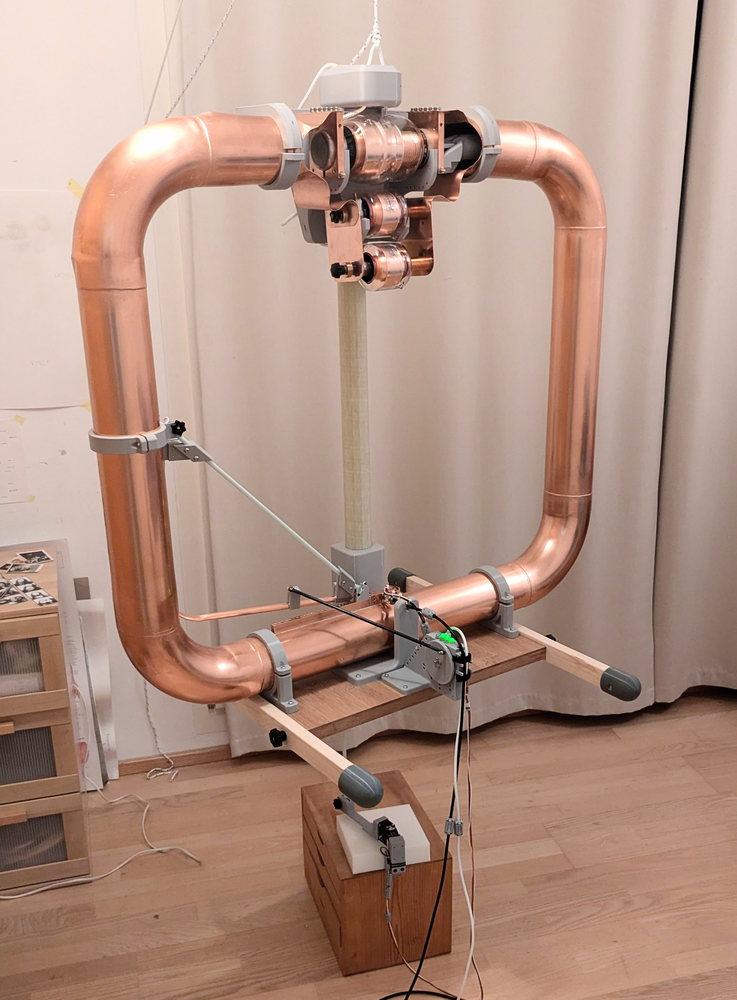
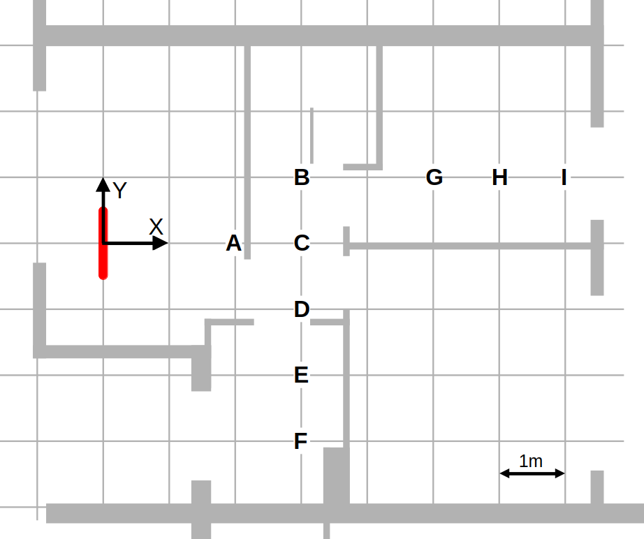
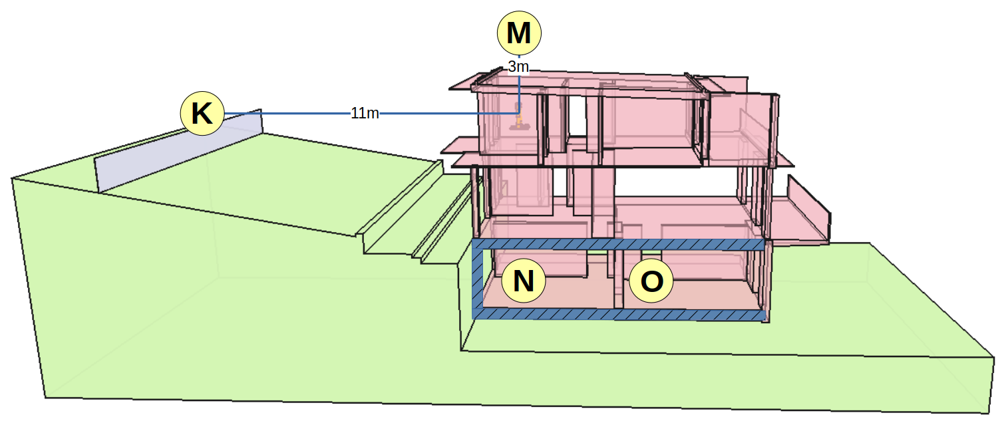
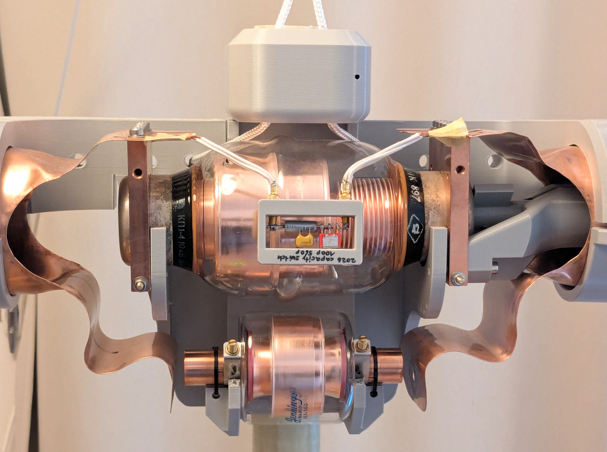

Info: Homebrew rectangular loop made of thick copper tubing with vacuum capacitors, 10 m to 160 m.
Conductor: Copper tube 100mm
Capacitor: Vacuum Capacitor
Environment: Placed in an upstairs room of a timber-frame house, 0.8 m above the floor.
| Band | 160m | 80m | 60m | 40m | 30m | 20m | 17m | 15m | 12m | 10m | |
| Frequency f | MHz | 1.840 | 3.573 | 5.358 | 7.075 | 10.135 | 14.077 | 18.098 | 21.075 | 24.922 | 28.070 |
| Intrinsic bandwidth Bint | kHz | 1.8 | 3.5 | 8.4 | 15.2 | 28.1 | 97.1 | 263.4 | 192.0 | 273.4 | 356.9 |
| Source of Bint | S-Parameters | ||||||||||
| Loop diameter D | m | 1.006 | |||||||||
| Conductor diameter d | m | 0.100 | |||||||||
| Loop count n | 1 | 1 | |||||||||
| Inductance L | H | 1.51e-06 | |||||||||
| Capacitance C | pF | 4953 | 1314 | 584 | 335 | 163 | 84.6 | 51.2 | 37.8 | 27 | 21.3 |
| Unloaded Q0 | 1 | 1005 | 1033 | 636 | 465 | 361 | 145 | 69 | 110 | 91 | 79 |
| Damping resistance RT | Ohm | 0.0174 | 0.0328 | 0.0799 | 0.144 | 0.267 | 0.922 | 2.499 | 1.822 | 2.594 | 3.386 |
| Radiation resistance RR | Ohm | 0.000028 | 0.000398 | 0.00201 | 0.00613 | 0.0259 | 0.0969 | 0.267 | 0.493 | 0.974 | 1.582 |
| Loss resistance RLoss | Ohm | 0.0173 | 0.0324 | 0.0779 | 0.138 | 0.241 | 0.825 | 2.233 | 1.328 | 1.620 | 1.804 |
| Power to antenna Pfwd | W | 100 | 100 | 100 | 100 | 100 | 100 | 100 | 100 | 100 | 100 |
| swr_min_ant | 1 | 1.10 | 1.13 | 1.06 | 1.09 | 1.05 | 1.02 | 1.02 | 1.02 | 1.02 | 1.02 |
| etaSWR_ant | % | 99.8 | 99.6 | 99.9 | 99.8 | 99.9 | 100.0 | 100.0 | 100.0 | 100.0 | 100.0 |
| Power antenna load Pload | W | 100 | 100 | 100 | 100 | 100 | 100 | 100 | 100 | 100 | 100 |
| Antenna efficiency η | % | 0.161 | 1.21 | 2.52 | 4.24 | 9.70 | 10.5 | 10.7 | 27.1 | 37.5 | 46.7 |
| Loop current I rms | A | 75.80 | 55.11 | 35.36 | 26.30 | 19.36 | 10.42 | 6.33 | 7.41 | 6.21 | 5.43 |
| Loop voltage Uloop rms | V | 1324 | 1868 | 1797 | 1766 | 1861 | 1391 | 1086 | 1482 | 1468 | 1447 |
| Magnetic dipole moment m | A m² | 60.285 | 43.829 | 28.120 | 20.920 | 15.395 | 8.284 | 5.031 | 5.893 | 4.937 | 4.322 |
| Link to calculator | calculator | calculator | calculator | calculator | calculator | calculator | calculator | calculator | calculator | calculator | |

The antenna was suspended from the ceiling on the upper floor, about 0.8 m above the floor. Several indoor positions were tested; the position shown gave comparatively low damping. The house is built in timber-frame construction. Additional features include a green roof with moist soil, a nearby PV system, aluminum-coated underfloor heating, stainless steel canopies, and aluminum window frames. Together, these factors still make for a challenging indoor RF environment.


The values shown on this page are newer than those in the linked paper below. They were determined from S-parameter measurements.
The values in the paper were determined using the VSWR = 2.62 criterion.
A detailed description is available in this paper: https://arxiv.org/abs/2607.10828

The calibration of the VNA was done at the antenna feed point: green line.
The cable attenuation alpha and the cable delay tau in the following table should therefore be small.
| File | model f0 MHz |
model Bint kHz |
model alpha db |
model_tau ns |
SWR_min_vna | SWR_min_ant | eta SWR |
|---|---|---|---|---|---|---|---|
| 20261027_0939_tubby_indoor_saa2_1p8MHz_VALUES.py | 1.840 | 1.8 | 0.003 | 0.53 | 1.10 | 1.10 | 0.998 |
| 20261102_0907_tubby_indoor_saa2_3p6MHz_VALUES.py | 3.573 | 3.5 | 0.000 | 2.05 | 1.13 | 1.13 | 0.996 |
| 20261102_0952_tubby_indoor_saa2_5p4MHz_VALUES.py | 5.358 | 8.4 | 0.005 | 8.96 | 1.06 | 1.06 | 0.999 |
| 20261102_0958_tubby_indoor_saa2_7p1MHz_VALUES.py | 7.075 | 15.2 | 0.029 | 9.57 | 1.09 | 1.09 | 0.998 |
| 20261102_1457_tubby_indoor_saa2_10p1MHz_VALUES.py | 10.135 | 28.1 | 0.003 | 6.47 | 1.05 | 1.05 | 0.999 |
| 20261102_1503_tubby_indoor_saa2_14p1MHz_VALUES.py | 14.077 | 97.1 | 0.000 | 8.23 | 1.02 | 1.02 | 1.000 |
| 20261102_1508_tubby_indoor_saa2_18p1MHz_VALUES.py | 18.098 | 263.4 | 0.000 | 8.35 | 1.02 | 1.02 | 1.000 |
| 20261102_1517_tubby_indoor_saa2_21p1MHz_VALUES.py | 21.075 | 192.0 | 0.425 | -16.01 | 1.02 | 1.02 | 1.000 |
| 20261102_1524_tubby_indoor_saa2_24p9MHz_VALUES.py | 24.922 | 273.4 | 0.000 | 6.97 | 1.02 | 1.02 | 1.000 |
| 20261102_1530_tubby_indoor_saa2_28p1MHz_VALUES.py | 28.070 | 356.9 | 0.000 | 6.54 | 1.02 | 1.02 | 1.000 |
The following diagrams: red points = measured values; green line = fitted model.
| Smith | SWR | Values | |||||||||||||||||||||
|---|---|---|---|---|---|---|---|---|---|---|---|---|---|---|---|---|---|---|---|---|---|---|---|
20261027_0939_tubby_indoor_saa2_1p8MHz |
20261027_0939_tubby_indoor_saa2_1p8MHz |
20261027_0939_tubby_indoor_saa2_1p8MHz
|
|||||||||||||||||||||
20261102_0907_tubby_indoor_saa2_3p6MHz |
20261102_0907_tubby_indoor_saa2_3p6MHz |
20261102_0907_tubby_indoor_saa2_3p6MHz
|
|||||||||||||||||||||
20261102_0952_tubby_indoor_saa2_5p4MHz |
20261102_0952_tubby_indoor_saa2_5p4MHz |
20261102_0952_tubby_indoor_saa2_5p4MHz
|
|||||||||||||||||||||
20261102_0958_tubby_indoor_saa2_7p1MHz |
20261102_0958_tubby_indoor_saa2_7p1MHz |
20261102_0958_tubby_indoor_saa2_7p1MHz
|
|||||||||||||||||||||
20261102_1457_tubby_indoor_saa2_10p1MHz |
20261102_1457_tubby_indoor_saa2_10p1MHz |
20261102_1457_tubby_indoor_saa2_10p1MHz
|
|||||||||||||||||||||
20261102_1503_tubby_indoor_saa2_14p1MHz |
20261102_1503_tubby_indoor_saa2_14p1MHz |
20261102_1503_tubby_indoor_saa2_14p1MHz
|
|||||||||||||||||||||
20261102_1508_tubby_indoor_saa2_18p1MHz |
20261102_1508_tubby_indoor_saa2_18p1MHz |
20261102_1508_tubby_indoor_saa2_18p1MHz
|
|||||||||||||||||||||
20261102_1517_tubby_indoor_saa2_21p1MHz |
20261102_1517_tubby_indoor_saa2_21p1MHz |
20261102_1517_tubby_indoor_saa2_21p1MHz
|
|||||||||||||||||||||
20261102_1524_tubby_indoor_saa2_24p9MHz |
20261102_1524_tubby_indoor_saa2_24p9MHz |
20261102_1524_tubby_indoor_saa2_24p9MHz
|
|||||||||||||||||||||
20261102_1530_tubby_indoor_saa2_28p1MHz |
20261102_1530_tubby_indoor_saa2_28p1MHz |
20261102_1530_tubby_indoor_saa2_28p1MHz
|
The main loop inductance is an important parameter because it directly affects the antenna efficiency calculation.
The inductance can be estimated from geometry (L). In general, an additional measurement is used as a cross-check, especially for non-circular loops where the geometric estimate is more difficult.
The resonance frequency of the LC circuit depends on L and C. Additional known capacitors are connected in parallel with the existing capacitor, and the new resonance frequency is measured.


| fNIX | 10.191552 | MHz | Resonance frequency with no additional capacitors connected. |
| fOFF | 10.137040 | MHz | Capacitors and switches are physically connected at the antenna capacitor. A small parasitic capacitance from wiring and switches lowers the resonance frequency. |
| f100 | 7.924246 | MHz | Resonance frequency with an additional 100 pF capacitor switched in. |
| f560 | 4.604633 | MHz | Resonance frequency with an additional 560 pF capacitor switched in. |
| C100 | 100.0 | pF | Additional capacitance used for the 100 pF branch. |
| C560 | 579.0 | pF | Additional capacitance used for the 560 pF branch. |
| L | 1.51e-06 | H | Calculated from geometry of the main loop. |
| L100 | 1.569e-06 | H | Derived from the resonance frequencies fOFF and f100 deviation +4% vs L |
| L560 | 1.638e-06 | H | Derived from the resonance frequencies fOFF and f560 deviation +8% vs L |
| CNIX | 1.676e-12 | As/V | Derived from using L100, fOFF, and fNIX estimated parasitic capacitance of switches and wiring; expected value 1 ... 5 pF |
The maximum deviation between L and the capacitor-based L1x values is +8%. This is considered a small deviation and is accepted. L is used for the calculations of the antenna efficiency.
Overview of all Antennas with filter/selection: compare page
Overview of all Antennas static: static compare page
2026 Peter Märki (HB9ISP). This project is created in my free time and has no commercial background. Provided without warranty of any kind. Feedback is welcome.